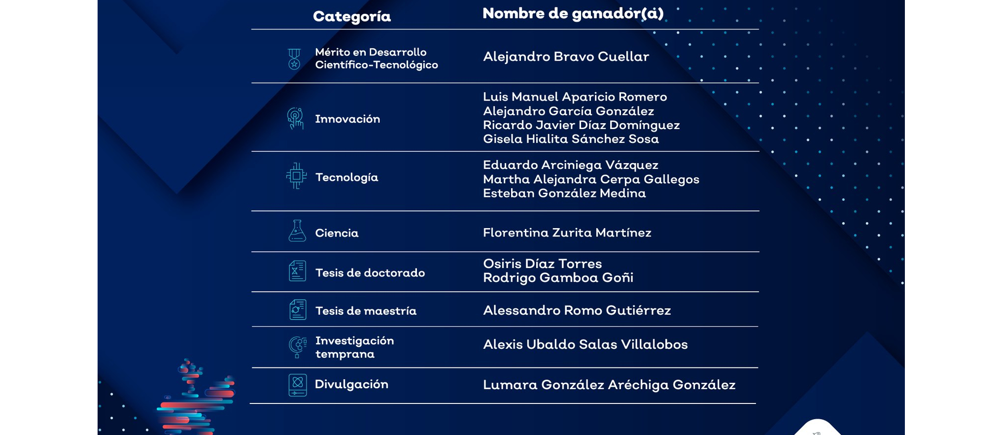

¿QUIENES SOMOS?

UNIVERSIDAD IMAGEN

IMAGEN DEL PLANTEL
La Universidad de Zacaguas es una institución educativa reconocida por su enfoque en el desarrollo sostenible, la tecnología y la formación integral. Fundada en 1968, cuenta con modernas instalaciones rodeadas de naturaleza y ofrece programas en áreas como Ingeniería, Ciencias Sociales, Humanidades y Administración. Con una fuerte conexión con la comunidad y alianzas internacionales, la UZ forma líderes comprometidos con los retos del mundo actual.
PREMIOS Y RECONOCIMIENTOS
En nuestra universidad nos gusta ayudar a nuestros alumnos a cumplir sus metas y poner en práctica sus conocimientos.
Dirección del plantel

Dra. Elena Xóchitl Navarro
La Dra. Elena Xóchitl Navarro es la actual rectora de la Universidad de Zacaguas, una institución reconocida por su compromiso con la innovación y el desarrollo sostenible. Con una destacada trayectoria académica, la Dra. Navarro ha liderado proyectos que integran la tecnología con las ciencias sociales, promoviendo una educación integral y adaptada a los desafíos del siglo XXI. Bajo su liderazgo, la Universidad de Zacaguas ha fortalecido sus vínculos con comunidades locales e internacionales, fomentando programas de intercambio y colaboraciones que enriquecen la experiencia educativa de sus estudiantes. Su visión estratégica ha posicionado a la universidad como un referente en la formación de líderes comprometidos con la transformación social y el respeto por la diversidad cultural.
En ZACAGUAS te ayudamos a continuar con tus estudios. Para ello, tenemos varias opciones de becas que te pueden ayudar a seguir adelante con tus metas.

BECAS DE EXCELENCIA
PASOS PARA SOLICITAR UNA BECA
Dirección: Avenida Universidad 1001, El Potrero, 20400 Rincón de Romos, Ags.
Teléfono: 465-123-45-67
Clave Universitaria: MSUUE-YS565-5DIIE